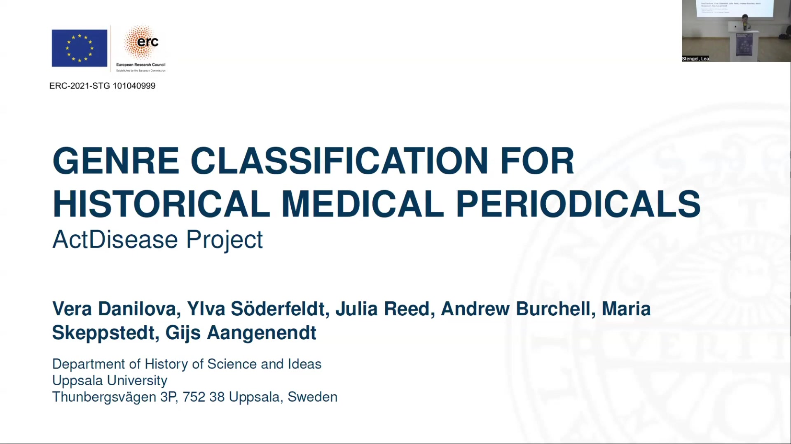
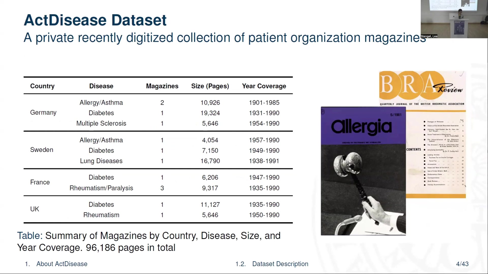
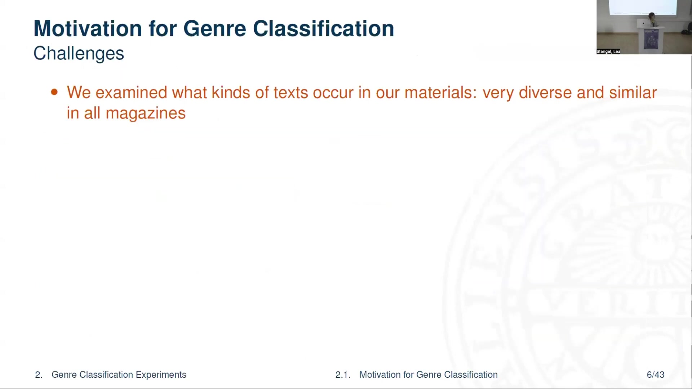
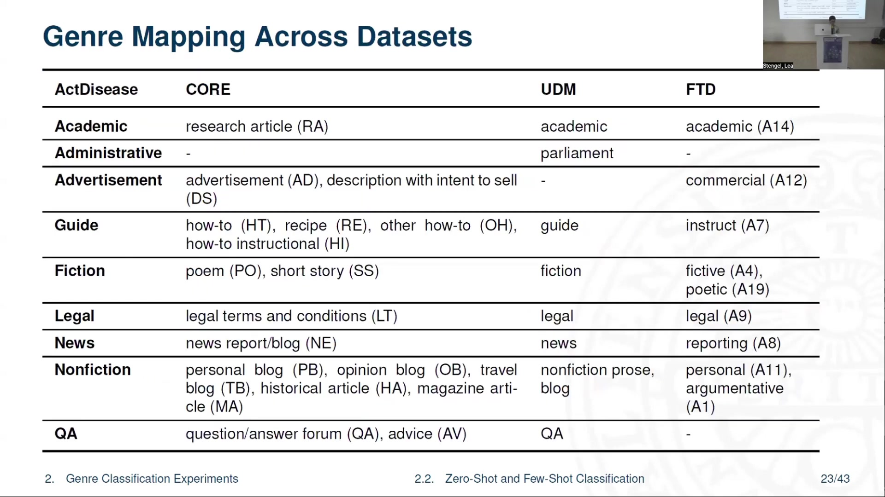
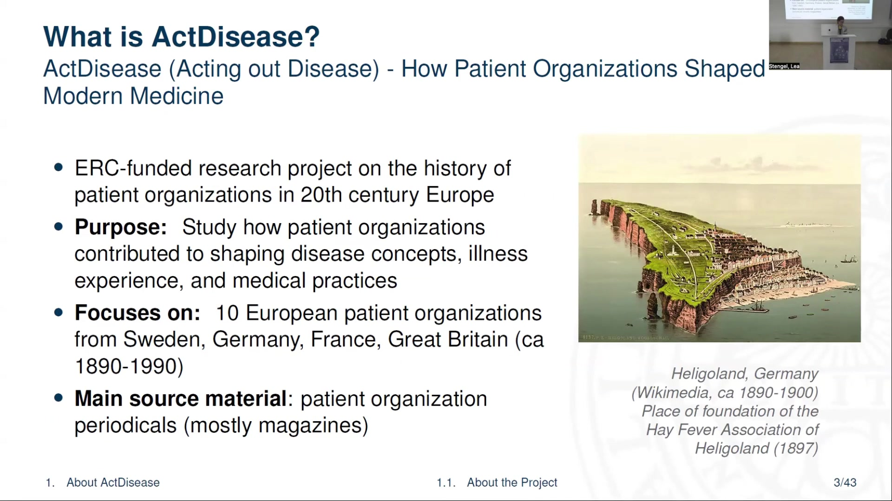
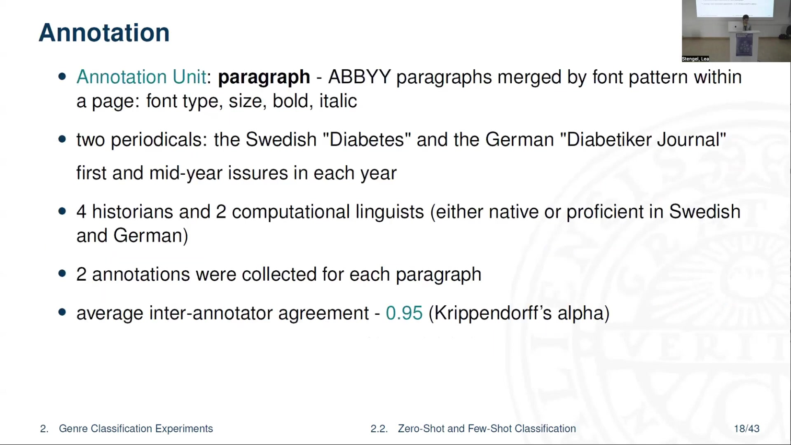

5 Genre Classification for Historical Medical Periodicals
Overview
The research team at Uppsala University has undertaken a procedural investigation into genre classification for historical medical periodicals, a core component of the ERC-funded ActDisease project. This initiative meticulously examines the history of patient organisations in 20th-century Europe, focusing on their influence on disease concepts, illness experiences, and medical practices. The project primarily utilises a private, recently digitised collection of patient organisation magazines from Sweden, Germany, France, and Great Britain, encompassing 96,186 pages published between approximately 1890 and 1990.
Employing ABBYY FineReader Server 14, the digitisation efforts successfully processed most common layouts; nevertheless, complex layouts, slanted text, and rare fonts posed persistent challenges, consequently leading to OCR errors, particularly in German and French texts. Recognising the diverse and co-occurring text types within these periodicals, the team identified genre classification as a crucial methodological advancement. This approach addresses the limitations and potential biases of traditional topic models and term counts, which fail to account for the varied communicative purposes embedded within single pages.
To address the scarcity of annotated data, the project explored both zero-shot and few-shot learning paradigms. The researchers defined a bespoke set of nine genre labels—Academic, Administrative, Advertisement, Guide, Fiction, Legal, News, Nonfiction Prose, and QA—under the supervision of a specialist historian. Six project members undertook the annotation, achieving a high inter-annotator agreement of 0.95 Krippendorff’s alpha on paragraphs from Swedish and German periodicals.
For zero-shot experiments, the team leveraged publicly available datasets, including the Corpus of Online Registers of English (CORE), Functional Text Dimensions (FTD), and UD-MULTIGENRE (UDM), performing a rigorous cross-dataset genre mapping. The team fine-tuned multilingual encoders, specifically XLM-Roberta, mBERT, and historical mBERT, across 48 configurations. The findings indicated that models fine-tuned on FTD performed optimally with the custom mapping, whilst historical mBERT demonstrated particular efficacy in distinguishing between fiction and nonfiction prose in few-shot settings.
Furthermore, the project investigated few-shot prompting with Llama 3.1 8b Instruct, revealing its capacity to handle certain genre labels effectively, though a limited number of examples proved insufficient for comprehensive representation across all categories. Ultimately, the research concludes that genre classification significantly enhances the accessibility of historical periodical sources for text mining, with few-shot learning of multilingual encoders, particularly historical mBERT with prior MLM fine-tuning, offering the most robust performance. Ongoing work encompasses developing a more fine-grained annotation scheme, generating synthetic data, and implementing active learning strategies.
5.1 The ActDisease Project: Historical Inquiry

The research team has embarked upon the ActDisease project, formally titled “Acting out Disease: How Patient Organizations Shaped Modern Medicine.” This ERC-funded initiative meticulously investigates the historical trajectory of patient organisations across Europe during the 20th century. Its central purpose involves scrutinising how these organisations fundamentally influenced the evolution of disease concepts, the lived experience of illness, and prevailing medical practices.
The project’s scope encompasses ten distinct European patient organisations, drawing its primary source material from their periodicals—predominantly magazines—published in England, Germany, France, and Great Britain between approximately 1890 and 1990. Notably, the Hay Fever Association of Heligoland, established in 1897, exemplifies the type of historical entity under examination; Heligoland, Germany, served as its foundational site.
5.2 The ActDisease Dataset: Collection

The ActDisease project has assembled a private, recently digitised collection of patient organisation magazines, constituting a substantial dataset of 96,186 pages. This extensive archive spans various countries, diseases, and publication periods.
Specifically, the German collection comprises 10,926 pages on Allergy/Asthma from two magazines (1901-1985), 19,324 pages on Diabetes from one magazine (1931-1990), and 5,646 pages on Multiple Sclerosis from one magazine (1954-1990). Swedish materials include 4,054 pages on Allergy/Asthma (1957-1990), 7,150 pages on Diabetes (1949-1990), and 16,790 pages on Lung Diseases (1938-1991), each from a single magazine. French contributions encompass 6,206 pages on Diabetes (1947-1990) and 9,317 pages on Rheumatism/Paralysis from three magazines (1935-1990). Finally, the UK segment features 11,127 pages on Diabetes (1935-1990) and 5,646 pages on Rheumatism (1950-1990), each sourced from one magazine.
5.3 Digitisation Processes and Challenges

The digitisation process for the ActDisease dataset primarily employed ABBYY FineReader Server 14 for Optical Character Recognition (OCR). This tool generally performed well, accurately recognising most common layouts and fonts present in the historical periodicals.
Nevertheless, significant challenges persisted. Complex layouts, slanted text, rare fonts, and inconsistent scan or photo quality frequently hindered optimal OCR performance. Consequently, the team observed persistent OCR errors, particularly prevalent in German and French texts, alongside instances of disrupted reading order. Notably, creative text segments, including advertisements, humour pages, and poems, exhibited a higher frequency of OCR inaccuracies. To mitigate these issues, the team conducted specific experiments, focusing on post-OCR correction of German texts through the application of instruction-tuned generative models. Danilova and Aangenendt documented this work in a publication presented at the RESOURCEFUL-2025 workshop.
5.4 Rationale for Genre Classification

The research team observed a profound diversity in the textual content of the historical periodicals, yet these varied text types consistently appeared across all magazines. Crucially, distinct text types frequently co-occurred on a single page; for instance, an administrative report might appear alongside an advertisement and a humour section. This inherent textual complexity posed a significant challenge for conventional analytical methods.
Traditional yearly and decade-based topic models and term counts, the team realised, failed to account for this side-by-side textual variation. Consequently, these methods likely introduced a bias towards the most frequently occurring text type, potentially distorting analytical outcomes. To overcome this limitation, genre emerged as a highly pertinent concept for distinguishing between text types, particularly as genres inherently align with the communicative purposes of authors, as Petrenz (2004) and Kessler (1997) define in language technology.
Implementing genre classification directly supports the project’s core objective: exploring the dataset from multiple perspectives to formulate robust historical arguments. Specifically, this approach enables a nuanced study of communicative strategies as they evolved over time, allowing for comparisons across different countries, diseases, and publications, a point Broersma (2010) highlights. Furthermore, it facilitates a more granular analysis of term distributions and topic models, enabling insights within specific genre groups.
5.5 Illustrative Genre Examples

The ActDisease dataset encompasses a rich array of genres, each serving distinct communicative functions. The research team identified examples such as poetry, which often provided emotional engagement. Academic reports, exemplified by studies on the pancreas, conveyed scientific and medical information. Legal documents, including deeds of covenant, established formal agreements and regulations. Advertisements, such as those promoting chocolate for diabetics, aimed to market products or services.
Furthermore, the collection featured instructive or guidance messages, offering practical advice like recipes, doctor’s recommendations, or dietary guidelines. Patient organisation reports documented internal affairs, detailing meetings and activities. Finally, narratives about patient lives provided first-hand accounts of illness experiences, offering a unique perspective on the human dimension of disease.
5.6 Experimental Design: Limited Data

Confronted with a scarcity of annotated data, the research team systematically explored two distinct methodological paradigms: zero-shot learning and few-shot learning. For zero-shot learning, the investigation posed two primary research questions: firstly, whether an efficient mapping of genre labels from existing public datasets to custom labels could yield satisfactory performance on the test set; and secondly, how classification performance might fluctuate across different datasets and models.
Conversely, the few-shot learning inquiry focused on two further questions: how performance changes in relation to varying training set sizes across different models; and whether a prior fine-tuning process on the entire dataset could significantly boost classification performance. Danilova and Söderfeldt’s comprehensive experimental design forms the basis of a forthcoming publication, scheduled for presentation at the LaTeCH-CLFL 2025 workshop.
5.7 Defining Genre Labels

The research team meticulously defined the genre labels under the direct supervision of the project’s lead historian, an expert in patient organisations. This collaborative process aimed to create categories that would effectively segment the content within the historical periodicals, thereby facilitating deeper historical analysis. Crucially, the team endeavoured to formulate these labels with sufficient generality to enable the classifier’s application to comparable datasets in the future.
Nine distinct genres emerged from this process, each with a precise definition:
Academic: Encompasses research-based reports or scientific explanations, designed to bridge the gap between the scientific medical community and the magazine’s readership.
Administrative: Documents organisational activities, reporting on patient organisation events and internal affairs.
Advertisement: Specifically promotes commercial products or services.
Guide: Provides step-by-step instructions, ranging from health tips to recipes.
Fiction: Aims to entertain and emotionally engage through stories, poems, or humour.
Legal: Explains terms, conditions, or contracts.
News: Reports on recent events.
Nonfiction Prose: Narrates real events or describes cultural and historical topics, including memoirs and essays.
QA (Question and Answer): Designates sections structured as questions with expert responses.
5.8 Annotation Protocol and Agreement

The annotation process employed paragraphs as the fundamental unit, extracting them from the ABBYY OCR output. The team merged these paragraphs based on consistent font patterns—including type, size, bolding, and italicisation—within each page. The research team sampled content from two specific periodicals: the Swedish “Diabetes” and the German “Diabetiker Journal,” focusing on their first and mid-year issues across all publication years.
Six dedicated project members undertook the annotation task, comprising four historians and two computational linguists. All annotators possessed either native fluency or high proficiency in both Swedish and German. For each paragraph, the team meticulously collected two independent annotations. This rigorous approach yielded an impressive average inter-annotator agreement of 0.95, as measured by Krippendorff’s alpha, signifying a remarkably high level of consistency amongst the annotators.
5.9 Dataset Splitting and Configurations
For the experimental phase, the research team initially partitioned the annotated data into a primary training set of 1182 paragraphs and a held-out set comprising 552 paragraphs, which represented approximately 30% of the total annotated material. The team stratified both these sets by genre label to ensure representative distributions.
Within the few-shot experiments, the team systematically varied the training set size, employing six distinct configurations: 100, 200, 300, 400, 500, and the full 1182 paragraphs. The team randomly sampled each of these smaller training sets from the main training pool, whilst maintaining a balance across genre labels. The team subsequently divided the held-out set equally into validation and test portions, similarly balancing them by label. Notably, the team excluded the Legal and News genres from these few-shot experiments, as their limited data volume precluded sufficient training. Conversely, the zero-shot experiments leveraged the entirety of the held-out test set.
5.10 Genre Distribution within ActDisease
Analysis of the genre distribution across both the training and held-out samples of the ActDisease dataset revealed a pronounced imbalance. Specifically, the Advertisement and Non-fictional Prose genres exhibited significant disparities in their representation across different languages. This imbalance necessitates careful consideration during model training and evaluation to prevent potential biases.
5.11 Leveraging External Datasets
For the zero-shot experiments, the research team incorporated external, modern datasets previously utilised in automatic web genre classification. The Corpus of Online Registers of English (CORE), developed by Egbert et al. (2015), provided document-level annotations, encompassing English, with main categories also available in Swedish, Finnish, and French.
Similarly, Sharoff’s (2018) Functional Text Dimensions (FTD) dataset, also annotated at the document level, offered balanced content in English and Russian. Kuzman et al. (2023) had previously leveraged this dataset for web genre classification. Additionally, the team employed UD-MULTIGENRE (UDM), a subset of Universal Dependencies (de Marneffe et al., 2021), which features recovered genre annotations at the sentence level across 38 languages, as detailed by Danilova and Stymne (2023).
5.12 Cross-Dataset Genre Mapping
The research team meticulously performed genre mapping across datasets, with two independent annotators undertaking the task. Only assignments achieving full agreement proceeded to the final mapping, ensuring robust alignment.
This process established correspondences between ActDisease genres and their equivalents in CORE, UDM, and FTD. For instance, “Academic” in ActDisease mapped to “research article” (RA) in CORE, “academic” in UDM, and “academic (A14)” in FTD. “Advertisement” aligned with “advertisement (AD)” in CORE, “description with intent to sell (DS)” in UDM, and “commercial (A12)” in FTD. Similarly, “Fiction” found its counterparts in “poem” (PO) and “short story” (SS) in CORE, “fiction” in UDM, and “fictive (A4)” and “poetic (A19)” in FTD. However, the team encountered a limitation: some ActDisease genres lacked suitable corresponding labels within the available external datasets.
5.13 Training Data and Encoder Models
The training data generation process involved a meticulous pipeline encompassing mapping, preprocessing, chunking, and systematic sampling. The research team configured training sets in four distinct ways for each dataset: one configuration ([G+]) focused exclusively on Germanic languages; another ([B1]) balanced data according to ActDisease labels; a third ([G-]) incorporated all language families; and the final configuration ([B2]) balanced data by both ActDisease and original labels. This yielded four FTD, four CORE, four UDM, and four merged training samples, all of which the team subjected to fine-tuning.
For classification, the team employed several multilingual encoder models. XLM-Roberta, developed by Conneau et al. (2020), served as a state-of-the-art web genre classifier, as noted by Kuzman et al. (2023). mBERT (Devlin et al., 2019) provided a baseline for comparison with historical mBERT (Schweter et al., 2022). Crucially, historical mBERT, pretrained on an extensive corpus of multilingual historical newspapers, proved particularly relevant given its inclusion of the target languages. These BERT-like models have consistently demonstrated efficacy in prior web register and genre classification studies, as evidenced by Lepekhin and Sharoff (2022), Kuzman and Ljubešić (2023), and Laippala et al. (2023). Ultimately, the fine-tuning process generated 48 distinct models, and the team subsequently averaged their performance metrics across all configurations.
5.14 Zero-Shot Learning Evaluation
Evaluating the zero-shot predictions presented a unique challenge: the imperfect overlap of label sets precluded direct comparison of overall performance metrics. Consequently, the research team meticulously assessed the performance of each genre individually, complementing this analysis with a thorough examination of confusion matrices to mitigate potential biases. The X-GENRE web genre classifier, as detailed by Kuzman et al. (2023), served as a robust baseline, with predictions focusing exclusively on the most similar labels directly mappable to the ActDisease genres.
The experimental setup often involved a cross-lingual context; FTD and X-GENRE, for instance, operated without German or Swedish data, whilst UDM and CORE datasets exhibited partially cross-lingual characteristics. Overall, models fine-tuned on FTD consistently demonstrated superior performance when integrated with the ActDisease mapping. Conversely, other datasets revealed distinct class-specific biases. UDM, for example, exhibited a bias towards news, primarily because its news training data contained the highest proportion of Germanic instances, overwhelmingly German. Similarly, CORE displayed a bias towards the guide genre, as its training data for this category was uniquely multilingual.
Intriguingly, certain models excelled in specific genre predictions. XLM-Roberta, when fine-tuned on UDM, achieved an average of 32% more correct predictions in the QA genre compared to mBERT and hmBERT. Conversely, hmBERT, also on UDM, produced an average of 16% more accurate predictions in the Administrative genre than XLM-Roberta and mBERT. Furthermore, CORE-based models consistently proved proficient at predicting the legal genre. Confusion matrices visually underscored these observed behavioural patterns, whilst detailed average per-category F1 scores provided a comprehensive quantitative assessment across all data configurations.
5.15 Few-Shot Learning Performance
Few-shot learning experiments unequivocally demonstrated the advantage of further training models on the ActDisease dataset, particularly when incorporating Masked Language Model (MLM) fine-tuning. The F1 score consistently improved as the number of training instances increased, though it remained below 0.8 even with the full training set of 1182 instances.
Amongst the models tested, hmBERT-MLM consistently outperformed its counterparts. A detailed examination of its performance revealed that, unlike other models, hmBERT-MLM retained its capacity to differentiate between fiction and nonfiction genres even when exposed to the full dataset. Conversely, other models, notably XLM-Roberta, exhibited a drastic decline in their ability to distinguish these two categories. Analysis of XLM-Roberta’s confusion matrix, when fine-tuned with MLM on the full dataset, indicated a frequent overprediction of nonfiction prose for fiction. This phenomenon likely stems from the shared thematic content within the ActDisease data, where both fictional and autobiographical narratives often revolve around patient experiences, leading to similar themes and narrative structures. Consequently, the research team proposes that an increased volume of data is essential to enhance performance in distinguishing these increasingly similar genres.
5.16 Few-Shot Prompting with Llama-3.1
Given the current insufficiency of data for comprehensive instruction tuning, the research team opted to evaluate few-shot prompting using Llama 3.1 8b Instruct, a widely recognised multilingual generative model with open weights. The prompt structure provided clear genre definitions, complemented by two or three illustrative examples for each category.
The results indicated that the model handled certain genre labels with reasonable efficacy. For instance, it achieved an F1-score of 0.84 for Legal content and 0.72 for Academic texts. However, the limited number of examples proved insufficient for robust representation across all genres. Notably, nonfictional prose yielded a lower F1-score of 0.49, whilst advertisement and administrative content also demonstrated suboptimal performance, with F1-scores of 0.73 and 0.60 respectively. The overall accuracy stood at 0.62, with a macro average F1-score of 0.59 and a weighted average of 0.63.
5.17 Key Findings and Recommendations
Popular magazines, unlike more specialised scientific journals or books, frequently encompass a multitude of genres, a characteristic that significantly complicates text mining efforts. The research team has concluded that genres inherently reflect deliberate choices in communicative strategies; consequently, accounting for these distinctions, whilst challenging, proves crucial for achieving accurate and detailed interpretations of text mining outcomes. Fundamentally, genre classification renders these rich historical sources accessible for advanced text mining.
For scenarios lacking dedicated training data, two viable strategies emerge. Firstly, one can successfully leverage existing modern datasets, provided the target categories maintain a general purpose. Alternatively, few-shot instruction of a proficient generative model offers another effective pathway. However, when some training data is available, few-shot learning of multilingual encoders, particularly those with prior Masked Language Model (MLM) fine-tuning—such as XLM-Roberta or historical multilingual BERT—demonstrates superior performance. Indeed, this latter approach emerged as the optimal solution for the project. Notably, historical multilingual BERT exhibited particularly strong gains, achieving a 24% improvement, which significantly surpassed the 14.5% gain for mBERT-MLM and 16.9% for XLM-RoBERTa.
5.18 Ongoing and Future Research
The research team is actively pursuing several avenues to enhance the quality and scope of this work for both the project and the wider academic community. Currently, the team is engaging with specific historical hypotheses, leveraging the insights gained from genre classification. Furthermore, they are developing a new, more fine-grained annotation scheme for genres, a project notably financed by Swe-CLARIN. Methodologically, the team is exploring advanced techniques, including synthetic data generation and active learning, to further refine their classification capabilities.
5.19 Acknowledgements
The project gratefully acknowledges the invaluable contributions of its annotators and core team members: Ylva Söderfeldt, Julia Reed, Andrew Burchell, Maria Skeppstedt, and Gijs Aangenendt. The European Research Council generously provided funding for this research under grant ERC-2021-STG 10104099. The Centre for Digital Humanities and Social Sciences offered crucial institutional support, supplying essential GPUs and data storage facilities. Finally, the team extends its gratitude to the diligent reviewers, Dr Maria Skeppstedt and other anonymous contributors, whose feedback significantly enhanced the work. Further details are available on the project website.